OPZIONE 1: Blue Static Noise GIF (dal desktop dell'utente) + Testo Bianco

OPZIONE 2: Monochrome Noise GIF + Dark Background (#121212) + Testo Bianco
OPZIONE 3: Film Grain del sito (Tema chiaro #f7f7f7) + Testo Nero